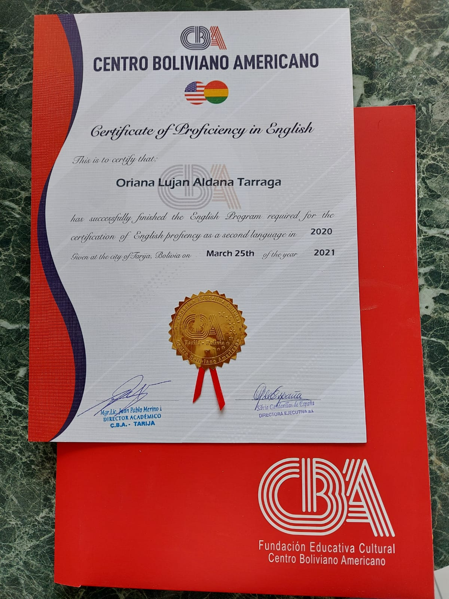

Estudios
Estudié en argentina una parte de mi niñez. Tanto primaria como secundaria las terminé en Bolivia. Mientras estudiaba la secundaria, también estaba estudiando Inglés en un instituto conocido como CBA(Centro Boliviano Americano), del cual me gradué en 2020 luego de haber estudiado ahí tres años. Hice un examen de la Universidad de Michigan conocido como Michigan English Test en 2021, el cual determinó que mi nivel de inglés es B1. Participé en obras que hablaban de problematicas sociales, y cada vez que puedo me inscribo en cursos pequeños sobre tecnología. Por el momento mi conocimiento de programacion se limita en python y c# pero con el tiempo quiero aprender a programar en mas lenguajes de programacion, mi objetivo es JAVA.
